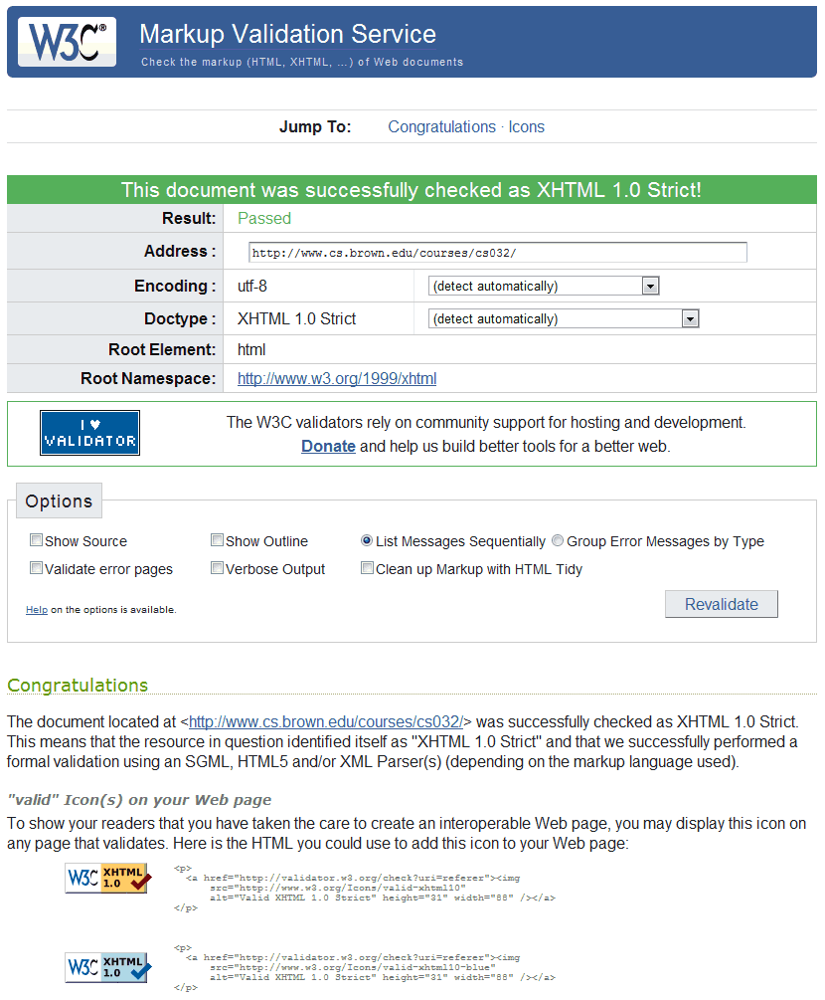

Benjamin Herila |
Home Portfolio Resume About Contact |
|
|
|
Because the course has a new web site each semester, I saved a screen capture for reference, showing that the site is fully XHTML compliant. This screen capture was saved on May 9, 2009.
